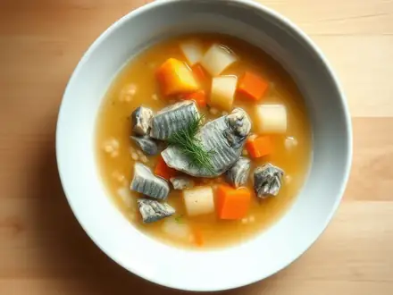
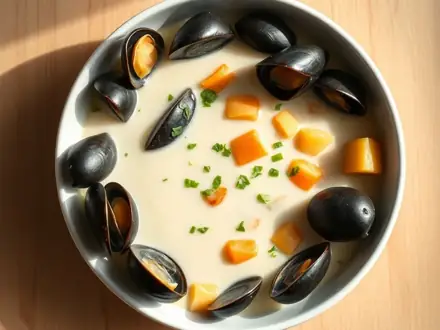
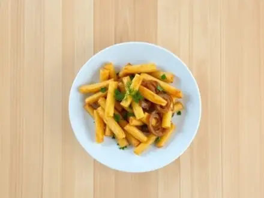
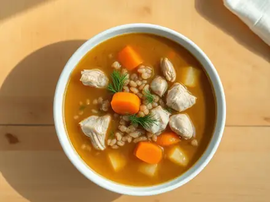
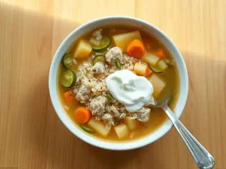

Что приготовить из картошки
Пюре, драники, запечённая и жареная картошка, супы. 89 рецептов: у каждого время, калории и БЖУ на порцию, пошаговые инструкции и список покупок
 Печёная картошка в микроволновке с сыром и ветчиной20 мин · 476 ккал · Б 18 г · Второе блюдо
Печёная картошка в микроволновке с сыром и ветчиной20 мин · 476 ккал · Б 18 г · Второе блюдо Молодой картофель с укропом и чесноком25 мин · 338 ккал · Б 6 г · Второе блюдо
Молодой картофель с укропом и чесноком25 мин · 338 ккал · Б 6 г · Второе блюдо Крем-суп из цветной капусты со сливками25 мин · 220 ккал · Б 7 г · Суп
Крем-суп из цветной капусты со сливками25 мин · 220 ккал · Б 7 г · Суп Суп с сосисками и вермишелью25 мин · 245 ккал · Б 9 г · Суп
Суп с сосисками и вермишелью25 мин · 245 ккал · Б 9 г · Суп Тёплый картофельный салат с селёдкой и луком25 мин · 449 ккал · Б 21 г · Салат
Тёплый картофельный салат с селёдкой и луком25 мин · 449 ккал · Б 21 г · Салат Салат «Нисуаз» с тунцом25 мин · 495 ккал · Б 34 г · Салат
Салат «Нисуаз» с тунцом25 мин · 495 ккал · Б 34 г · Салат Жареная картошка с грибами30 мин · 395 ккал · Б 10 г · Второе блюдо
Жареная картошка с грибами30 мин · 395 ккал · Б 10 г · Второе блюдо Жареная картошка с курицей на сковороде30 мин · 475 ккал · Б 36 г · Второе блюдо
Жареная картошка с курицей на сковороде30 мин · 475 ккал · Б 36 г · Второе блюдо Картошка с фаршем на сковороде30 мин · 487 ккал · Б 21 г · Второе блюдо
Картошка с фаршем на сковороде30 мин · 487 ккал · Б 21 г · Второе блюдо Крестьянский завтрак с картошкой и беконом30 мин · 593 ккал · Б 23 г · Второе блюдо
Крестьянский завтрак с картошкой и беконом30 мин · 593 ккал · Б 23 г · Второе блюдо Пататас бравас (картошка в остром томатном соусе)30 мин · 390 ккал · Б 7 г · Второе блюдо
Пататас бравас (картошка в остром томатном соусе)30 мин · 390 ккал · Б 7 г · Второе блюдо Испанская тортилья с картофелем30 мин · 374 ккал · Б 13 г · Второе блюдо
Испанская тортилья с картофелем30 мин · 374 ккал · Б 13 г · Второе блюдо Жареная картошка по-грузински с кинзой30 мин · 392 ккал · Б 7 г · Второе блюдо
Жареная картошка по-грузински с кинзой30 мин · 392 ккал · Б 7 г · Второе блюдо Жареная картошка с сосисками и луком30 мин · 529 ккал · Б 14 г · Второе блюдо
Жареная картошка с сосисками и луком30 мин · 529 ккал · Б 14 г · Второе блюдо Тушёная картошка с курицей30 мин · 471 ккал · Б 27 г · Второе блюдо
Тушёная картошка с курицей30 мин · 471 ккал · Б 27 г · Второе блюдо Картошка, тушённая в сметане с чесноком30 мин · 387 ккал · Б 7 г · Второе блюдо
Картошка, тушённая в сметане с чесноком30 мин · 387 ккал · Б 7 г · Второе блюдо Алу гоби - картошка с цветной капустой по-индийски30 мин · 305 ккал · Б 8 г · Второе блюдо
Алу гоби - картошка с цветной капустой по-индийски30 мин · 305 ккал · Б 8 г · Второе блюдо Рёшти - швейцарская картофельная лепёшка30 мин · 412 ккал · Б 6 г · Второе блюдо
Рёшти - швейцарская картофельная лепёшка30 мин · 412 ккал · Б 6 г · Второе блюдо Картошка, тушённая с капустой30 мин · 284 ккал · Б 7 г · Второе блюдо
Картошка, тушённая с капустой30 мин · 284 ккал · Б 7 г · Второе блюдо Жареная картошка с куриной печенью и луком30 мин · 580 ккал · Б 31 г · Второе блюдо
Жареная картошка с куриной печенью и луком30 мин · 580 ккал · Б 31 г · Второе блюдо Сливочный суп с сёмгой (лохикейтто)30 мин · 459 ккал · Б 24 г · Суп
Сливочный суп с сёмгой (лохикейтто)30 мин · 459 ккал · Б 24 г · Суп Рыбный суп из консервов с рисом30 мин · 263 ккал · Б 18 г · Суп
Рыбный суп из консервов с рисом30 мин · 263 ккал · Б 18 г · Суп Суп с клёцками на курином бульоне30 мин · 208 ккал · Б 8 г · Суп
Суп с клёцками на курином бульоне30 мин · 208 ккал · Б 8 г · Суп Кукурузный суп-чаудер с беконом и картошкой30 мин · 386 ккал · Б 14 г · Суп
Кукурузный суп-чаудер с беконом и картошкой30 мин · 386 ккал · Б 14 г · Суп Сырный суп35 мин · 374 ккал · Б 17 г · Суп
Сырный суп35 мин · 374 ккал · Б 17 г · Суп Картофельное пюре35 мин · 312 ккал · Б 6 г · Гарнир
Картофельное пюре35 мин · 312 ккал · Б 6 г · Гарнир
Рыбный суп из сардин с пшеном35 мин · 247 ккал · Б 18 г · Суп
Сливочный суп с мидиями35 мин · 278 ккал · Б 15 г · Суп
Жареная картошка с луком на сковороде35 мин · 304 ккал · Б 5 г · Гарнир Окрошка на кефире40 мин · 309 ккал · Б 17 г · Суп
Окрошка на кефире40 мин · 309 ккал · Б 17 г · Суп Драники40 мин · 445 ккал · Б 8 г · Второе блюдо
Драники40 мин · 445 ккал · Б 8 г · Второе блюдо Овощной суп-пюре40 мин · 94 ккал · Б 3 г · Суп
Овощной суп-пюре40 мин · 94 ккал · Б 3 г · Суп Крем-суп из шампиньонов со сливками40 мин · 232 ккал · Б 8 г · Суп
Крем-суп из шампиньонов со сливками40 мин · 232 ккал · Б 8 г · Суп Картофельный салат по-немецки с беконом и огурцами40 мин · 346 ккал · Б 11 г · Салат
Картофельный салат по-немецки с беконом и огурцами40 мин · 346 ккал · Б 11 г · Салат- Картофель фри на сковороде40 мин · 289 ккал · Б 4 г · Гарнир
 Щи из свежей капусты45 мин · 119 ккал · Б 4 г · Суп
Щи из свежей капусты45 мин · 119 ккал · Б 4 г · Суп Уха45 мин · 239 ккал · Б 27 г · Суп
Уха45 мин · 239 ккал · Б 27 г · Суп Сырный суп с курицей и шампиньонами45 мин · 357 ккал · Б 33 г · Суп
Сырный суп с курицей и шампиньонами45 мин · 357 ккал · Б 33 г · Суп- Кулеш с беконом и пшеном45 мин · 320 ккал · Б 12 г · Суп
 Грибной суп50 мин · 163 ккал · Б 5 г · Суп
Грибной суп50 мин · 163 ккал · Б 5 г · Суп Суп с фрикадельками50 мин · 329 ккал · Б 18 г · Суп
Суп с фрикадельками50 мин · 329 ккал · Б 18 г · Суп Картофель дольками в духовке50 мин · 290 ккал · Б 5 г · Гарнир
Картофель дольками в духовке50 мин · 290 ккал · Б 5 г · Гарнир Овощное рагу50 мин · 228 ккал · Б 5 г · Второе блюдо
Овощное рагу50 мин · 228 ккал · Б 5 г · Второе блюдо Минестроне50 мин · 235 ккал · Б 8 г · Суп
Минестроне50 мин · 235 ккал · Б 8 г · Суп Грибная лапша постная50 мин · 168 ккал · Б 7 г · Суп
Грибная лапша постная50 мин · 168 ккал · Б 7 г · Суп
Суп гречневый с курицей50 мин · 191 ккал · Б 14 г · Суп Куриный суп с лапшой60 мин · 227 ккал · Б 16 г · Суп
Куриный суп с лапшой60 мин · 227 ккал · Б 16 г · Суп Оливье60 мин · 494 ккал · Б 16 г · Салат
Оливье60 мин · 494 ккал · Б 16 г · Салат Салат Мимоза с сардинами60 мин · 455 ккал · Б 21 г · Салат
Салат Мимоза с сардинами60 мин · 455 ккал · Б 21 г · Салат Картофельное рагу с грибами60 мин · 315 ккал · Б 10 г · Второе блюдо
Картофельное рагу с грибами60 мин · 315 ккал · Б 10 г · Второе блюдо Щи постные с грибами60 мин · 164 ккал · Б 5 г · Суп
Щи постные с грибами60 мин · 164 ккал · Б 5 г · Суп Суп из зелёной чечевицы с овощами постный60 мин · 227 ккал · Б 12 г · Суп
Суп из зелёной чечевицы с овощами постный60 мин · 227 ккал · Б 12 г · Суп Салат «Лисья шубка» с селёдкой и грибами60 мин · 377 ккал · Б 14 г · Салат
Салат «Лисья шубка» с селёдкой и грибами60 мин · 377 ккал · Б 14 г · Салат Картофельные крокеты в сухарях60 мин · 384 ккал · Б 9 г · Гарнир
Картофельные крокеты в сухарях60 мин · 384 ккал · Б 9 г · Гарнир Куриные бёдра с картошкой в духовке65 мин · 765 ккал · Б 51 г · Второе блюдо
Куриные бёдра с картошкой в духовке65 мин · 765 ккал · Б 51 г · Второе блюдо Картофель, запечённый целиком в фольге, со сметаной65 мин · 319 ккал · Б 6 г · Гарнир
Картофель, запечённый целиком в фольге, со сметаной65 мин · 319 ккал · Б 6 г · Гарнир Колдуны70 мин · 781 ккал · Б 26 г · Второе блюдо
Колдуны70 мин · 781 ккал · Б 26 г · Второе блюдо
Рассольник с рисом и курицей70 мин · 324 ккал · Б 21 г · Суп Чорба из курицы по-молдавски70 мин · 185 ккал · Б 15 г · Суп
Чорба из курицы по-молдавски70 мин · 185 ккал · Б 15 г · Суп Борщ постный с фасолью70 мин · 197 ккал · Б 8 г · Суп
Борщ постный с фасолью70 мин · 197 ккал · Б 8 г · Суп Картофель-гармошка в духовке (хассельбек)70 мин · 316 ккал · Б 7 г · Гарнир
Картофель-гармошка в духовке (хассельбек)70 мин · 316 ккал · Б 7 г · Гарнир Винегрет75 мин · 178 ккал · Б 4 г · Салат
Винегрет75 мин · 178 ккал · Б 4 г · Салат Рыбный пирог из консервов с картошкой75 мин · 333 ккал · Б 14 г · Выпечка
Рыбный пирог из консервов с картошкой75 мин · 333 ккал · Б 14 г · Выпечка Зелёный борщ со шпинатом80 мин · 301 ккал · Б 22 г · Суп
Зелёный борщ со шпинатом80 мин · 301 ккал · Б 22 г · Суп Кугель картофельный80 мин · 290 ккал · Б 7 г · Гарнир
Кугель картофельный80 мин · 290 ккал · Б 7 г · Гарнир Картофельный гратен со сливками в духовке85 мин · 381 ккал · Б 11 г · Гарнир
Картофельный гратен со сливками в духовке85 мин · 381 ккал · Б 11 г · Гарнир Гороховый суп постный90 мин · 228 ккал · Б 10 г · Суп
Гороховый суп постный90 мин · 228 ккал · Б 10 г · Суп Мастава90 мин · 340 ккал · Б 16 г · Суп
Мастава90 мин · 340 ккал · Б 16 г · Суп Свекольник холодный на сметане90 мин · 217 ккал · Б 9 г · Суп
Свекольник холодный на сметане90 мин · 217 ккал · Б 9 г · Суп Жаркое со свининой в горшочках100 мин · 533 ккал · Б 24 г · Второе блюдо
Жаркое со свининой в горшочках100 мин · 533 ккал · Б 24 г · Второе блюдо Эчпочмак100 мин · 721 ккал · Б 27 г · Выпечка
Эчпочмак100 мин · 721 ккал · Б 27 г · Выпечка Азу по-татарски100 мин · 574 ккал · Б 33 г · Второе блюдо
Азу по-татарски100 мин · 574 ккал · Б 33 г · Второе блюдо Вареники с картошкой100 мин · 515 ккал · Б 12 г · Второе блюдо
Вареники с картошкой100 мин · 515 ккал · Б 12 г · Второе блюдо Селёдка под шубой100 мин · 437 ккал · Б 16 г · Салат
Селёдка под шубой100 мин · 437 ккал · Б 16 г · Салат- Гороховый суп-пюре с беконом и гренками100 мин · 430 ккал · Б 22 г · Суп
 Салат «Гранатовый браслет» с курицей и свёклой100 мин · 349 ккал · Б 18 г · Салат
Салат «Гранатовый браслет» с курицей и свёклой100 мин · 349 ккал · Б 18 г · Салат Рассольник120 мин · 304 ккал · Б 19 г · Суп
Рассольник120 мин · 304 ккал · Б 19 г · Суп Чанахи в горшочках120 мин · 499 ккал · Б 30 г · Второе блюдо
Чанахи в горшочках120 мин · 499 ккал · Б 30 г · Второе блюдо Чечевичная похлёбка с бараниной120 мин · 336 ккал · Б 23 г · Суп
Чечевичная похлёбка с бараниной120 мин · 336 ккал · Б 23 г · Суп Гуляш-суп по-венгерски120 мин · 341 ккал · Б 22 г · Суп
Гуляш-суп по-венгерски120 мин · 341 ккал · Б 22 г · Суп Суп перловый с говядиной120 мин · 252 ккал · Б 19 г · Суп
Суп перловый с говядиной120 мин · 252 ккал · Б 19 г · Суп Жареные пирожки с картошкой120 мин · 446 ккал · Б 8 г · Выпечка
Жареные пирожки с картошкой120 мин · 446 ккал · Б 8 г · Выпечка Кюфта-бозбаш130 мин · 366 ккал · Б 21 г · Суп
Кюфта-бозбаш130 мин · 366 ккал · Б 21 г · Суп Борщ150 мин · 349 ккал · Б 23 г · Суп
Борщ150 мин · 349 ккал · Б 23 г · Суп Шурпа из баранины150 мин · 462 ккал · Б 30 г · Суп
Шурпа из баранины150 мин · 462 ккал · Б 30 г · Суп Фасолевый суп постный150 мин · 160 ккал · Б 9 г · Суп
Фасолевый суп постный150 мин · 160 ккал · Б 9 г · Суп Щи из квашеной капусты с говядиной150 мин · 265 ккал · Б 19 г · Суп
Щи из квашеной капусты с говядиной150 мин · 265 ккал · Б 19 г · Суп Курник упрощённый с курицей и картошкой150 мин · 482 ккал · Б 23 г · Выпечка
Курник упрощённый с курицей и картошкой150 мин · 482 ккал · Б 23 г · Выпечка- Кыстыбый с картофелем60 мин · 612 ккал · Б 14 г · Второе блюдо
Другие подборки
- Что приготовить из курицы
- Что приготовить из фарша
- Что приготовить из мяса
- Что приготовить из рыбы
- Что приготовить из яиц
- Что приготовить из творога
- Что приготовить из кабачков
- Что приготовить из капусты
- Что приготовить из грибов
- Что приготовить из риса
- Что приготовить из макарон
- Что приготовить из гречки
- Быстрый ужин за 30 минут
- Быстрый завтрак за 20 минут
- Что приготовить на скорую руку
- ПП-рецепты: лёгкие блюда до 400 ккал
- Белковые блюда: от 25 г белка на порцию
- Дешёвые рецепты из простых продуктов
- Что приготовить ребёнку
- Постные блюда
- Блюда на пару
- Что приготовить в духовке
- Простые супы
- Простые салаты
- Выпечка и десерты
- Блюда на праздничный стол
- Что приготовить из остатков